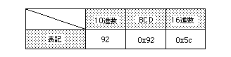

Return to previous page | Return to menu | Go to next page
Uint32
Arithmetic functions
Conversion from BCD code to hexadecimal code
Uint32 slDec2Hex(val)
Uint32 val ;
val BCD code to be converted
Convert BCD code to hexadecimal code.
The function returns the converted hexadecimal code.
BCD code: 4-bit notation representing 0-9 (Example: Decimal 128 is 0x128 in BCD notation)

Note) Examples of numerical notation using each numerical notation are shown below.
slDec2Hex